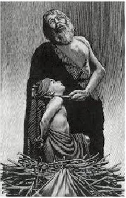

Religion - a set of doctrines which requires faith in metaphysical phenomena (i.e., gods, miracles, afterlife, power of prayer, etc.). If a set of doctrines does not require faith, then it does not qualify as a religion, but only as a philosophy. Many religions claim a mutually exclusive right to Truth - they maintain that their religion is right, and all others are wrong - while others are more inclusive.
The Absurd - a phenomenon which defies reasonable explanation.

Soeren Kierkegaard (hereafter K), whose Fear and Trembling posits acceptance of the Absurd as prerequisite for faith, uses the example of Abraham’s unquestioning resolve to kill his son Isaac based only upon the command of a voice in his head that he identified as God. K considers this action Absurd because it defies logic and social custom. Christian dogma, according to K, embodies paradoxes which are offensive to reason. (Indeed, were someone today to say that he intended to kill his child because a voice in his head had instructed him to, we too might react with Fear and Trembling!) There are two attitudes one can adopt to this assertion: viz., one can take K’s leap of faith and believe, or one can doubt. What one may not do, according to K, is have faith by virtue of reason. If one chooses faith, one must suspend reason. In fact one must believe by virtue of the Absurd.
K notwithstanding, A rational individual should apply the same objectivity to her own beliefs as she would to those of another, for who would not agree that the believers in other gods are wrong?
Spirituality or Religion? I personally am not an atheist - it seems self-evident to me that there is something behind the wondrous universe in which we live, and that intuitive knowledge can lead to insights into its nature - but I am wary of pre-scientific legends that later claim factual credibility (inerrancy). I object to the presentation of religion as based in fact and science, and I feel there is copious evidence that exposes these stories as myth or legend. I have, however, included rebuttals to my assertions and I welcome readers to offer their own rebuttals where they think I have erred.
Religion performs useful social functions and is cherished by a great many people, but is also responsible for enormous monstrosities in human history. Like a rifle which may be used either for hunting and for personal protection or for mass murder, so religion in the right hands may be a productive element in society, but in the wrong hands a powerful destructive force. Perhaps the greatest flaws in religion are that it teaches people from earliest youth to reject objectivity and to blindly follow fairy tales, and that it depersonalizes judgment so that, for example, an otherwise civilized person might kill his own child on a whim.
~~~~~~~